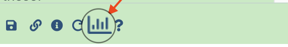

Manipulation of edgeR data for visualisation and comparisons¶
As we did for DESeq2 we will extract the most differentially expressed genes in the various conditions, and then visualize them using an heatmap of the normalized counts for each sample.
Extract the most differentially expressed genes (PRJNA630433 / edgeR)¶
Basically, we navigate in the edgeR history of the PRJNA630433 use-case and we repeat a edgeR run, asking in addition for a file containing the normalised counts, these are in log2 counts per million (logCPM).
Note the difference with DESeq2 which instead return rLog-Normalized counts. Both transformation give very similar results except for low counts that show more dispersion with the logCPM approach (see an interesting comparison here)

edgeR settings
-
Count Files or Matrix?
→ Separate Count Files
-
1: Factor/Name
→ Tissue
-
1: Factor/1: Group
Note that there will be three Groups (ie factor levels) in this analysis: Dc, Mo and Oc.
→ Oc
-
Counts file(s)
→ select the data collection icon, then
15: Oc FeatureCounts counts -
2: Factor/2: Group
→ Mo
-
Counts file(s)
→ select the data collection icon, then
10: Mo FeatureCounts counts -
3: Factor level (you must click on

Insert Group)→ Dc
-
Counts file(s)
→ select the data collection icon, then
5: Mo FeatureCounts counts -
Use Gene Annotations?
→
No -
Formula for linear model
→ Leave empty - Input contrasts manually or through a file
1 | |
-
1: Constrast
→
Mo-Dc -
2: Constrast (click
Insert Contrast)→
Oc-Dc -
3: Constrast (click
Insert Contrast)→
Oc-Mo -
Filter Low Counts
→ No, leave folded
-
Output options
→
YestoOutput Normalised Counts Table? -
Advanced options
→ Put
P-Value Adjusted Thresholdto 0.1 (to be consistent with DESeq settings)→ Leave other advanced options unchanged
-
Run Tool
 This time, the normalized counts are returned as a supplementary dataset in the
collection
This time, the normalized counts are returned as a supplementary dataset in the
collection edgeR on data ... and others: Tables.
Indeed this is an issue to have a this collection with heterogenous datasets (3 DE tables + 1 normalized count tables, with different number of columns) since in the next step we are going to apply a filter to these data.
We thus will fix this issue immediately in three steps (a bit a Galaxy practice...)
- Use the tool
Extract element identifiers of a list collectionand run it on the collectionedgeR on data ... and others: Tables. (Be careful to select the last collection) This will return a single dataset with the names of the collections elements. -
Deploy this dataset and click at its bottom to the visualisation icon

In the central panel that opens up, click the
Editor, Manually edit text, remove the last line ("edgeR_normcounts"), check that you have 4 line remaining (3 lines plus one empty) and click the light blue buttonexport( this button is not easy
to see depending on your screen settings). -
Now use the tool
Filter collection, select the collectionedgeR on data ... and others: Tablesas input collection,Remove if identifiers are ABSENT from the file, and the manually edited datasetExtract element identifiers on ..., and others (modified). - This will return 2 collections. Rename immediately the "(filtered)" collection as
edgeR DE tablesand the (discarded) collection asLog2CPM edgeR_normcounts.
Note that this latter is a collection but with a single element...
Beside, edgeR_normcounts.tsv also show up as a html link in the dataset edgeR on
data 4, data 3, and others: Report, that download directly to your local computer if you
click it.
Keep the 1-element collection Log2CPM edgeR_normcounts for latter, we will use
it for the clustered heatmap.
Generate top lists of EdgeR DE genes¶
Select genes with |log2FC > 2| and p-adj < 0.01 with Filter data on any column using simple expressions¶

Filter data on any column... settings
-
Filter
→ edgeR DE tables (
this is a collection) -
With following condition
→
abs(c2) > 2 and c6 < 0.01 this expression is different from the one
used for DESeq2 tables because the column structure is different. -
Number of header lines to skip
→
1(these tables have an added header !) -
Click the
Run Toolbutton
Rename the "filter on..." collection to edgeR Top gene lists
Compute a boolean value by row¶
This is to determine whether genes in the lists are up or down-regulated

Compute on rows settings
-
Input file
→
edgeR Top gene lists( collection !) -
Input has a header line with column names?
→
Yes -
1: Expressions
-
Add expression
→
c2 > 0 this expression is different from the one used for DESeq2
tables -
Mode of the operation
→
Append -
The new column name
→
Regulation -
Avoid scientific notation in any newly computed columns
→
No -
Click the
Run Toolbutton
Look at the effect of evaluating the expression c2 > 0 in the new column
expression in the output datasets.
Transform True and False values to up and down, respectively¶

Column Regex Find And Replace settings
-
Select cells from
→
Compute on collection 40 (or so) -
using column
→
7 -
Check
→ click the button
Insert Check -
Find Regex
→
False -
Replacement
→
down -
Check
→ click another time the button
Insert Check -
Find Regex
→
True -
Replacement
→
up -
Click the
Run Toolbutton
rename the collection Column Regex Find And Replace on collection 44 with
top gene lists - oriented
Split the lists in up and down regulated lists¶
This will be performed through 2 successive runs of the
 tool
tool Select lines that match an
expression

Select lines that match an expression settings
-
Select lines from
→
top gene lists - oriented -
that
→
matching -
the pattern
→
\tup(a tabulation immediately followed by the string up) -
Keep header line
→
Yes -
Click the
Run Toolbutton
Immediately rename the collection Select on collection... to edgeR top up-regulated
gene lists
Redo exactly the same operation with a single change in the setting of the
 tool
tool Select lines that match an
expression
Select lines that match an expression settings
-
Select lines from
→
top gene lists - oriented -
that
→
matching -
the pattern
→
\tdown(a tabulation immediately followed by the string down) -
Keep header line
→
Yes -
Click the
Run Toolbutton
Rename the collection Select on collection... to edgeR top down-regulated
gene lists
keep the last three generated collections for later comparison with DESeq2 and
limma tools
Plotting an heatmap of the most significantly de-regulated genes¶
For this, we are going to collect and gather all significantly de-regulated genes in any of the 3 conditions, and to intersect (join operation) this list with the rLog normalized count table precedently generated.
Use Advanced cut to select the list of deregulated genes in all three comparisons¶

advanced cut settings
-
File to cut
→
edgeR Top gene lists(this is a collection) -
Operation
→
Keep -
Delimited by
→
Tab -
Cut by
→
fields -
List of Fields
→
Column 1 -
First line is a header line
- Click the
Run Toolbutton
Rename this collection of single column datasets edgeR top genes names
Next we concatenate the three datasets of the previous collection in a single dataset¶
We do that using the 
Concatenate multiple datasets tail-to-head while specifying how tool

Concatenate multiple datasets tail-to-head while specifying how settings
-
What type of data do you wish to concatenate?
→
Single datasets -
Concatenate Datasets
→
Click on the collection icon and select edgeR top genes names -
Include dataset names?
→
No -
Number of lines to skip at the beginning of each concatenation:
→
1 -
Click the
Run Toolbutton
Rename the return single dataset as edgeR Pooled top genes
Next we extract Uniques gene names from the Pooled top genes dataset¶
You probably agree that the same gene may be deregulated in the three pair-wise comparisons which we have performed with DESeq2.
Thus we need to eliminate the redundancy, using the tool

Unique
occurrences of each record.

Unique occurrences of each record settings
-
File to scan for unique values
→
edgeR Pooled top genes -
Ignore differences in case when comparing
→
No -
Column only contains numeric values
→
No -
Advanced Options
→ Leave as
Hide Advanced Options -
Click the
Run Toolbutton
Add a header the list of unique gene names associated we significant DE in any of the comparisons¶
We do this with the tools Add Header

Add Header settings
-
List of Column headers (comma delimited, e.g. C1,C2,...)
→
edgeR_All_DE_genes -
Data File (tab-delimted)
→
Unique on data 7x... -
Click the
Run Toolbutton
Rename the generated dataset edgeR_All_DE_genes
Intersection (join operation) between the list of unique gene name associated with DE and the rLog-Normalized counts file.¶
This is the moment when we are going to use the single-element Log2CPM edgeR_normcounts
collection and intersect it (join operation) with the list of DE genes in all three condition.
To do this, we are going to use the tool

Join two files

Join two files settings
-
1st file
→ click on the collection icon and select
log2CPM edgeR_normcounts -
Column to use from 1st file
→
1 -
2nd File
→
edgeR_All_DE_genes -
Column to use from 2nd file
→
1 -
Output lines appearing in
→
Both 1st and 2nd files -
First line is a header line
→
Yes -
Ignore case
→
No -
Value to put in unpaired (empty) fields
→
NA -
Click the
Run Toolbutton
Rename the single-element output collection edgeR Log2CPM Normalized counts of DE genes
Plot a heatmap of the Log2CPM Normalized counts of edgeR DE genes in all three conditions¶
We do this using the 
Plot
heatmap with high number of rows tool

Plot heatmap with high number of rows settings
-
Input should have column headers - these will be the columns that are plotted
→ Click the collection icon and select
edgeR Log2CPM Normalized counts of DE genes -
Data transformation
→
Plot the data as it is -
Enable data clustering
→
Yes -
Clustering columns and rows
→
Cluster rows and not columns -
Distance method
→
Euclidean -
Clustering method
→
Complete -
Labeling columns and rows
→
Label columns and not rows -
Coloring groups
→
Blue to white to red -
Data scaling
→
Scale my data by row -
tweak plot height
→
35 -
tweak row label size
→
1 -
tweak line height
→
24 -
Run Tool